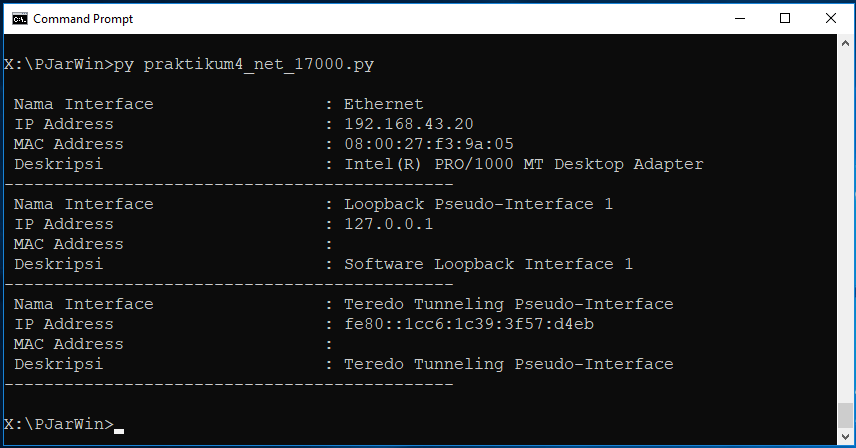

Kuliah Pemrograman Jaringan
PERTEMUAN KeEMPATBELAS 14 :
| Status | : Offline |
| Schedule | : Offline |
| Waktu | : 08/01/2021 |
| Tema | : Praktikum 13 FTP UPLOAD File |
Materi Praktikum
Materi Praktikum 13 adalah tentang Bagaimana Meng-UPLOAD file melalui FTP ke mesin linux di jaringan local….
- Siapkan sebuah file latihan yang berisi biodata anda
- Beri nama filenya dengan
biodata_npm.txt, contohbiodata_17001.txt - Isi file tersebut dengan :
# ----------------------------
# Informatika UMMU Ternate
# File Pendukung Praktikum 13 PJaringan
# File Biodata unuk NPM
# * Koneksi ke Mesin lain Lewat ftp
# * UPLOAD File ke Mesin lain Lewat ftp
# ----------------------------
Nama : Nama Anda
NPM : Nomo NPM (5 digit terakhir saja)
MK : Nama Matakuliah
Pertemuan Ke : 14
- Kemudian Simpan ke dalam folder tempat anda menyimpan Script Python praktikum 13,
- Setelah itu Jalankan script dibawah, perhatikan Pesan yang muncul di layar !.
Script Praktikum 13
Tulis atua copy code berikut dan jalankan di mesin anda, jangan lupa untuk mengubah beberapa variabel untuk disesuaikan dengna konfigurasi jaringan anda…
# ----------------------------
# Informatika UMMU Ternate
# Script Praktikum 13 PJaringan
# * Koneksi ke Mesin lain Lewat ftp
# * UPLOAD File ke Mesin lain Lewat ftp
# ----------------------------
from ftplib import FTP as F
#ip_target='192.168.2.1'
ip_target='localhost'
user='pjar'
pasw='1234'
myftp = F(ip_target)
myftp.login(user,pasw)
print('IP TARGET : ',ip_target)
print('USER : ',user)
print('*'*35 + '\n') # Garis Batas
## Untuk UPLOAD File
def upload_file(nama_file):
try:
the_file=open(nama_file,'rb')
myftp.storbinary('STOR %s' % nama_file, the_file)
the_file.close()
print("Sukses UPLOAD File : %s !\n" % nama_file)
except Exception as ER:
print("Error UP, Gagal UPLOAD File %s !\n" % nama_file)
# PRINTOUT Informasi KE LAYAR
try:
# fup: adalah variabel File yang akan diUpload
fup= 'biodata_npm.txt'
upload_file(fup)
except Exception as ER:
print("Error : ",ER)
print('*'*35) # Garis Batas
myftp.dir()
#akhir_code
Arahan Untuk Praktikum 11 :
- Lakukan Praktikum sesuai dengan arahan yang ada di file PDF praktikum yang telah anda download, kemuadian periksa hasilnya setelah dijalankan, jika tidak Error, silahkan kumpul atau upload ke folder
PJaringanpdadaDropboxnya masing2. - Lakukanlah praktikum bersama teman2 agar mudah memahami materi dan dapat berdiskusi ke teman2 jika ada masalah yang kurang dipahami…
Waktu Kumpul
- Hasil praktikum Harap sudah dikumpul ke folder
PJaringandidropboxnya masing2, paling lambat sebelum final/UAS
PERTEMUAN KeTIGABELAS 13 :
| Status | : Online |
| Schedule | : Offline |
| Waktu | : 04/01/2021 |
| Tema | : Praktikum 12 FTP UPLOAD File |
File PDF Praktikum 11 :
Silahkan download file praktikumnya, harap dibaca dan lakukan praktikum sesuai arahan yang ada di file yang anda download, berikut tautannya: Download File Praktikum 12
Materi Praktikum
Materi Praktikum 12 adalah tentang Bagaimana Meng-UPLOAD file melalui FTP,,…
Arahan Untuk Praktikum 11 :
- Lakukan Praktikum sesuai dengan arahan yang ada di file PDF praktikum yang telah anda download, kemuadian periksa hasilnya setelah dijalankan, jika tidak Error, silahkan kumpul atau upload ke folder
PJaringanpdadaDropboxnya masing2. - Lakukanlah praktikum bersama teman2 agar mudah memahami materi dan dapat berdiskusi ke teman2 jika ada masalah yang kurang dipahami…
Waktu Kumpul
- Hasil praktikum Harap sudah dikumpul ke folder
PJaringandidropboxnya masing2, paling lambat sebelum final/UAS
PERTEMUAN KeDUABELAS 12 :
| Status | : Online |
| Schedule | : Offline |
| Waktu | : 25/12/2020 |
| Tema | : Praktikum 11 FTP Download File |
File PDF Praktikum 11 :
Silahkan download file praktikumnya, harap dibaca dan lakukan praktikum sesuai arahan yang ada di file yang anda download, berikut tautannya: Download File Praktikum 11
Materi Praktikum
Materi Praktikum 11 adalah tentang Bagaimana MenDownload file melalui FTP,,…
Arahan Untuk Praktikum 11 :
- Lakukan Praktikum sesuai dengan arahan yang ada di file PDF praktikum yang telah anda download, kemuadian periksa hasilnya setelah dijalankan, jika tidak Error, silahkan kumpul atau upload ke folder
PJaringanpdadaDropboxnya masing2. - Lakukanlah praktikum bersama teman2 agar mudah memahami materi dan dapat berdiskusi ke teman2 jika ada masalah yang kurang dipahami…
Waktu Kumpul
- Hasil praktikum Harap sudah dikumpul ke folder
PJaringandidropboxnya masing2, paling lambat hariSabtu 02/01/2021
PERTEMUAN KeSEBELAS 11 :
| Status | : Online |
| Schedule | : Online |
| Waktu | : 18/12/2020 |
| Tema | : Praktikum 10 FTP Dir/List Files |
File PDF Praktikum 10 :
Silahkan download file praktikumnya, harap dibaca dan lakukan praktikum sesuai arahan yang ada di file yang anda download, berikut tautannya: Download File Praktikum 10
Materi Praktikum
Materi Praktikum 10 adalah tentang FTP, FTP (File Transfer Protocol) adalah salah satu protokol tertua yang pernah ada di Internet. Protokol FTP dikembangkan oleh Abhay Bhushan (alumni IIT dan MIT) pada tahun 1970-an, ketika bekerja pada proyek ARPAnet.,…
Arahan Untuk Praktikum 10 :
- Lakukan Praktikum sesuai dengan arahan yang ada di file PDF praktikum yang telah anda download, kemuadian periksa hasilnya setelah dijalankan, jika tidak Error, silahkan kumpul atau upload ke folder
PJaringanpdadaDropboxnya masing2. - Lakukanlah praktikum bersama teman2 agar mudah memahami materi dan dapat berdiskusi ke teman2 jika ada masalah yang kurang dipahami…
Waktu Kumpul
- Hasil praktikum Harap sudah dikumpul ke folder
PJaringandidropboxnya masing2, paling lambat hariKamis 24/12/2020
PERTEMUAN KeSEPULUH 10 :
| Status | : Offline |
| Schedule | : Offline |
| Waktu | : 11/12/2020 |
| Tema | : Praktikum 9 SSH Multi Device |
File PDF Praktikum 9 :
Silahkan download file praktikumnya, harap dibaca dan lakukan praktikum sesuai arahan yang ada di file yang anda download, berikut tautannya: Download File Praktikum 9
Materi Praktikum
Materi Praktikum masih seputar SSH, tapi pada praktikum kali ini kita coba dengan beberapa device dan dengan beberapa perintah sekaligus yang dieksekuli lewat script yang kita buat…
Arahan Untuk Praktikum 9 :
- Lakukan Praktikum sesuai dengan arahan yang ada di file PDF praktikum yang telah anda download, kemuadian periksa hasilnya setelah dijalankan, jika tidak Error, silahkan kumpul atau upload ke folder
PJaringanpdadaDropboxnya masing2. - Lakukanlah praktikum bersama teman2 agar mudah memahami materi dan dapat berdiskusi ke teman2 jika ada masalah yang kurang dipahami…
Waktu Kumpul
- Hasil praktikum yang dikerjakan di LAB (Offline) Harap sudah dikumpul ke folder
PJaringandidropboxnya masing2, paling lambat hariSabtu 12/12/2020
PERTEMUAN KeSEMBILAN 09 - UTS :
| Status | : Online |
| Schedule | : Online |
| Waktu | : 10/12/2020 |
| Tema | : Praktikum 8 UTS |
File PDF Praktikum 8 - UTS :
Silahkan download file praktikumnya, harap dibaca dan lakukan UTS sesuai arahan yang ada di file yang anda download, berikut tautannya: Download File Praktikum 8 UTS
Arahan Untuk Praktikum 8 - UTS :
Lakukan UTS sesuai dengan arahan yang ada di file PDF praktikum yang telah anda download, kemuadian periksa hasilnya setelah dijalankan, setelah itu silahkan kumpul atau upload ke folder PJaringan pdada Dropbox nya masing2.
Waktu Kumpul
Hasil UTS yang dikerjakan Harap sudah dikumpul ke folder PJaringan di dropbox nya masing2, paling lambat hari Jumat 11/12/2020 Jam 09.30
PERTEMUAN KeDELAPAN 08 :
| Status | : Offline |
| Schedule | : Offline |
| Waktu | : 04/12/2020 |
| Tema | : Praktikum 7 |
File PDF Praktikum 7 :
Silahkan download file praktikumnya, harap dibaca dan lakukan praktikum sesuai arahan yang ada di file yang anda download, berikut tautannya: Download File Praktikum 7
Materi Praktikum
Telnet, SSH adalah protokol jaringan yang memungkinkan pertukaran data melalui jalur aman antara dua perangkat jaringan. Silahkan lanjutkan praktikum mengikuti arahan yang ada di file pdf yang didownload…
Arahan Untuk Praktikum 7 :
- Lakukan Praktikum sesuai dengan arahan yang ada di file PDF praktikum yang telah anda download, kemuadian periksa hasilnya setelah dijalankan, jika tidak Error, silahkan kumpul atau upload ke folder
PJaringanpdadaDropboxnya masing2. - Lakukanlah praktikum bersama teman2 agar mudah memahami materi dan dapat berdiskusi ke teman2 jika ada masalah yang kurang dipahami…
Waktu Kumpul
- Hasil praktikum yang dikerjakan di LAB (Offline) Harap sudah dikumpul ke folder
PJaringandidropboxnya masing2, paling lambat hariJumat 04/12/2020
PERTEMUAN KeTUJUH 07 :
| Status | : Online |
| Schedule | : Offline |
| Waktu | : 28/11/2020 |
| Tema | : Praktikum 6 |
INFO UTS
DIINFORMASIKAN KEPADA SEMUA MAHASISWA, INSYA-ALLAH MINGGU DEPAN (sabtu 05/12/2020) UTS UNTUK PJaringan
File PDF Praktikum 6 :
Silahkan download file praktikumnya, harap dibaca dan lakukan praktikum sesuai arahan yang ada di file yang anda download, berikut tautannya: Download File Praktikum 6
Materi Praktikum
Telnet, SSH adalah protokol jaringan yang memungkinkan pertukaran data melalui jalur aman antara dua perangkat jaringan. Silahkan lanjutkan praktikum mengikuti arahan yang ada di file pdf yang didownload…
Arahan Untuk Praktikum 6 :
- Lakukan Praktikum sesuai dengan arahan yang ada di file PDF praktikum yang telah anda download, kemuadian periksa hasilnya setelah dijalankan, jika tidak Error, silahkan kumpul atau upload ke folder
PJaringanpdadaDropboxnya masing2. - Lakukanlah praktikum bersama teman2 agar mudah memahami materi dan dapat berdiskusi ke teman2 jika ada masalah yang kurang dipahami…
Waktu Kumpul
- Hasil praktikum Harap sudah dikumpul ke folder
PJaringandidropboxnya masing2, paling lambat hariSabtu 05/12/2020
netifaces to scapy [praktikum 4]
Materi ini atau script dibawah cukup lakukan praktikum untuk tambahan saja dan tidak harus dikumpuk/upload ke dropbox, tapi yang mau upload boleh dan akan dipertimbangkan sebagai nilai tambahan…
Pada Materi Praktikum 4 Untuk teman2 yang menggunakan Windows dan gagal install netifaces pada praktikum 4
bisa mencoba modul lain yaitu scapy,
Install scapy
- pip3 install scapy
- atau : pip3 install --user scapy
The Script :
# ----------------------------
# Informatika UMMU Ternate
# Script Praktikum 4 PJaringan
# * Get Network Interface Name
# * Get IP From Network Interface
# * Simpan : praktikum4_net-win_npm.py
# ----------------------------
import scapy.all as sc
print("")
for l in sc.get_windows_if_list():
try:
print(" {:<20} : {}".format("Nama Interface",l["name"]))
print(" {:<20} : {}".format("IP Address",l["ips"][1]))
print(" {:<20} : {}".format("MAC Address",l["mac"]))
print(" {:<20} : {}".format("Deskripsi",l["description"]))
print("-"*35)
except:
pass
Hasil Screenshot :
Hasil dari Script diatas saat dijalankan pada mesin Windows 10 dalam tangkapan layar (screenshot) :

PERTEMUAN KeENAM 06 :
| Status | : Online |
| Schedule | : Online |
| Waktu | : 21/11/2020 |
| Tema | : Praktikum 5 |
File PDF Praktikum 5 :
Silahkan download file praktikumnya, harap dibaca dan lakukan praktikum sesuai arahan yang ada di file yang anda download, berikut tautannya: Download File Praktikum 5
Materi Praktikum
Telnet, Telnet merupakan perintah yang digunakan untuk komunikasi interaktife dengan host lainnya menggunakan protokol TELNET. Lebih lanjut silahkan baca di modul…
Arahan Untuk Praktikum 5 :
- Lakukan Praktikum sesuai dengan arahan yang ada di file PDF praktikum yang telah anda download, kemuadian periksa hasilnya setelah dijalankan, jika tidak Error, silahkan kumpul atau upload ke folder
PJaringanpdadaDropboxnya masing2. - Lakukanlah praktikum bersama teman2 agar mudah memahami materi dan dapat berdiskusi ke teman2 jika ada masalah yang kurang dipahami…
Waktu Kumpul
- Hasil praktikum Harap sudah dikumpul ke folder
PJaringandidropboxnya masing2, paling lambat hariSabtu 28/11/2020
PERTEMUAN KeLIMA 05 :
| Status | : Online |
| Schedule | : Offline |
| Waktu | : 13/11/2020 |
| Tema | : Praktikum 4 |
File PDF Praktikum 4 :
- Silahkan ambil/download file praktikum berikut ini, baca dan lakukan praktikum, Download File Praktikum 4
Arahan Untuk Praktikum 4 :
- Lakukan Praktikum sesuai dengan arahan yang ada di file PDF praktikum yang telah anda download, kemuadian periksa hasilnya setelah dijalankan, jika tidak Error, silahkan kumpul atau upload ke folder
PJaringanpdadaDropboxnya masing2. - Lakukanlah praktikum bersama teman2 agar mudah memahami materi dan dapat berdiskusi ke teman2 jika ada masalah yang kurang dipahami…
Waktu Kumpul
- Hasil praktikum Harap sudah dikumpul ke folder
PJaringandidropboxnya masing2, paling lambat hariJumat 20/11/2020
PERTEMUAN KeEMPAT 04 :
| Status | : Online |
| Schedule | : Online |
| Waktu | : 10/11/2020 |
| Tema | : Praktikum 3 |
File PDF Praktikum 3 :
- Silahkan ambil/download file praktikum berikut ini, baca dan lakukan praktikum, Download File Praktikum 3
Arahan Untuk Praktikum 3 :
- Lakukan Praktikum sesuai dengan arahan yang ada di file PDF praktikum yang telah anda download, kemuadian periksa hasilnya setelah dijalankan, jika tidak Error, silahkan kumpul atau upload ke folder
PJaringanpdadaDropboxnya masing2. - TUGAS: Ambil beberapa SCREENSHOT Hasil Praktikum anda dan simpan dalam bentuk FORMAT file PDF.
- Lakukanlah praktikum bersama teman2 agar mudah memahami materi dan dapat berdiskusi ke teman2 jika ada masalah yang kurang dipahami…
Waktu Kumpul
- Hasil praktikum Harap sudah dikumpul ke folder
PJaringandidropboxnya masing2, paling lambat hariSelasa 17/11/2020
PERTEMUAN KeTIGA 03 :
| Status | : Online |
| Schedule | : Offline |
| Waktu | : 30/10/2020 |
| Tema | : Praktikum 2 |
File PDF Praktikum 2 :
- Silahkan ambil/download file praktikum berikut ini, baca dan lakukan praktikum, Download File Praktikum 2
Arahan dan Materi Praktikum :
- Lakukan Praktikum sesuai dengan arahan yang ada di file PDF praktikum yang telah anda download, kemuadian periksa hasilnya setelah dijalankan, jika tidak Error, silahkan kumpul atau upload ke folder
PJaringanpdadaDropboxnya masing2. - Lakukanlah praktikum bersama teman2 agar mudah memahami materi dan dapat berdiskusi ke teman2 jika ada masalah yang kurang dipahami…
Waktu Kumpul
- Hasil praktikum Harap sudah dikumpul ke folder
PJaringandidropboxnya masing2, paling lambat hariJumat 06/11/2020
PERTEMUAN KEDUA 02 :
| Status | : Online |
| Schedule | : Online |
| Waktu | : 23/10/2020 |
| Tema | : Praktikum 1 |
File PDF Praktikum 1 :
- Silahkan ambil/download file praktikum berikut ini, baca dan lakukan praktikum, Download File Praktikum 1
Arahan dan Materi Praktikum :
- Untuk Seluruh Mahasiswa agar segera download file praktikum 1 dan lakukan praktikum mandiri di komputernya masing-masing
- Materi Praktikum 1 adalah pengenalan python socket, Untuk yang ingin mengenal lebih jauh tentang socket dapat melihat materi tambahan yang tersedia di tautan berikut : Materi Tambahan Python
- Lakukan Praktikum sesuai dengan arahan yang ada di file PDF praktikum yang telah anda download, kemuadian periksa hasilnya setelah dijalankan, jika tidak Error, silahkan kumpul atau upload ke folder
PJaringanpdadaDropboxnya masing2. - Sangat disarankan untuk Mahasiswa agar melakukan praktikum dalam kelompok belajar atau bersama teman2 agar mudah dan cepat memahami materi, dan bagi teman2 yang sudah paham sangat diharapkan dapat membimbing teman2 yang belum paham, dan bagi teman2 yang belum paham agar tidak segan untuk bertanya…
Waktu Kumpul
- Diharapkan Kepada Mahasiswa agar sudah menyelesaikan praktikum 1 dan mengumpulkannya ke folder
PJaringandidropboxnya masing2 paling lambat hariSenin 26/10/2020 23.59
PERTEMUAN PERTAMA 01 :
| Status | : Offline |
| Schedule | : Offline |
| Waktu | : 16/10/2020 |
| Tema | : Arahan dan Kontrak Kuliah |
Variabel dan Persentase Penilaian :
- Absen : 40 %
- Absen Untuk Pertemuan Online dihitung berdasarkan yang mengumpulkan file praktikum
- Tugas : 40 %
- Tugas yang AKAN DINILAI adalah tugas yang dikerjakan dan dikumpulkan SESUAI DENGAN KETENTUAN,
- Setiap tugas akan disampaikan ketentuan apa saja yang harus dipenuhi, dari format penulisan sampai dengan ketentuan pengumpulan tugas
- Umumnya ketentuan yang harus selalu diperhatikan adalah ISI TUGAS, BATAS WAKTU PENGUMPULAN TUGAS dan PENAMAAN FILE TUGAS, serta FORMAT atau TEMPLATE TUGAS.
- UTS dan UAS : 20 % (UTS 10% dan UAS 10%)
Yang Harus Dipersiapkan :
- Untuk Pemrograman Jaringan, bahasa pemrograman yang akan digunakan adalah bahasa pemrograman python,
- Semua yang perlu dipersiapkan untuk pemrograman jaringan sama dengan yang ada pada pemrograman game kecuali untuk beberapa modul yang perlu ditambahkan seperti telnet, paramiko dan netmiko
- Untuk mengumpulkan tugas dan lainnya secara online akan menggunakan dropbox,
- Setiap Mahasiswa harap melengkapi laptopnya dengan vm (virtualbox atau vmware) yang terinstall python pada keduanya host dan vm,
By : Ikhwan